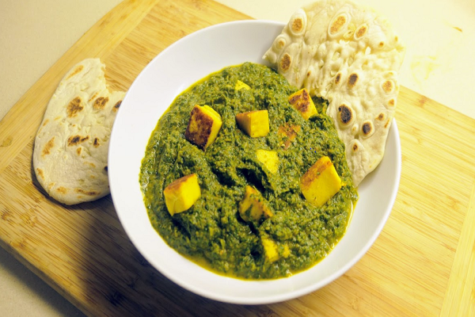

Palak Paneer
Want to learn how to make restaurant jasisa palak paneer !!! There is something about palak paneer. Palak paneer has a ubiquitious presence on every Indian restaurant menu. Punjabi’s love their palak paneer.Every house hold makes palak paneer atleast once a fortnight. Home made palak paneer is rustic. But everyone likes to eat silky smooth palak paneer like restaurant. So here is the recipe for restaurant jaisa palak paneer.
Ingredients
- 500 gms Fresh Palak
- 250 gms Paneer
- 1 large Onion finely chopped
- 1 tblsp Ginger-Garlic finely chopped
- 2–3 Green Chillies chopped
- 2 medium Tomatoes chopped
- 1 tsp Cumin Seeds (Jeera)
- 1 tsp Red Chilly Powder
- 1 tsp Coriander Powder
- 1 tsp Garam Masala
- 1/4 cup Cashewnut
- 6 tblsp Ghee/Butter
- 100 gms fresh Cream/Malai (No Compromise on this)
- Salt To Taste
Directions
- Soak the cashenuts in lukewarm water for 30 mins.
- Clean and wash the spinach leaves.
- Take a vessel boil spinach in it with minimum water for 5 – 6 mins with lid OPEN. Immediately transfer it to cold water to stop the further cooking of the spinach (palak). After 2 – 3 mins take it out put it in a blender and when completely cooled make a fine puree of it.
- Cut the paneer in to cubes and deep fry them till golden. Drain them out in a water bowl. This will make the paneer soft. Keep it aside.
- In a kadai, heat 1 tblsp of ghee and add the cumin seeds. when they begin to crackle add chopped onion, chopped green chilly and garlic- ginger chopped. Fry till the onion become translucent Then add the chopped tomatoes and cook till the tomatoes become soft and then add cashewnuts. Stir fry for 5 mins.
- Then switch off the flame and let the masala cool down.
- When the masala cools down grind this masala to a fine paste.
- Now heat the remaining ghee / butter and tip in the grinded masala, salt and dry masalas – red chilly powder, coriander powder and garam masala. Mix well. Cook the masala for 4 – 5 mins or till the masala begins to leave oil and looks completely bhunoed.
- At this point add the pureed palak and paneer cubes. Mix with a gentle hand so that paneer cubes do not break and cook for 5 – 6 mins or till the ghee separates.
- Add the cream reserving 1 tbsp for garnishing later.
- Mix it well. Add 1/2 cup of water and let it simmer now on a low flame for 10 – 15 mins. Cover the pan while simmering.
- After 10 – 15 mins the ghee will be separate on the sides. Check the seasoning. Close the flame.
- Garnish with 1 tbsp cream and serve hot with naan, chapati or parantha of your choice.
- Your palak paneer is ready.